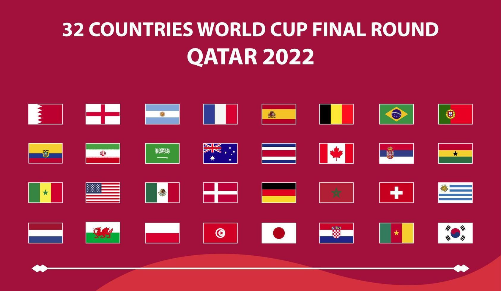

Football teams represent the heart of the sport. Both national teams and club teams play major roles in shaping football history and culture. National teams represent their countries in international competitions, while club teams compete in domestic leagues and continental tournaments throughout the year. Some of the most famous national teams include Brazil, known for its beautiful attacking football; Argentina, famous for producing legendary players; France, known for its balanced and tactical gameplay; and Germany, respected for discipline and strong teamwork. These teams have inspired generations of fans with their success and passion. At the club level, teams like FC Barcelona, Real Madrid, Manchester United, Bayern Munich, and Liverpool have built massive global fan bases. These clubs have won major trophies and developed some of the greatest players in football history. Each team has its own style, traditions, and loyal supporters who proudly wear their colors and celebrate every victory together.
Teams played in the last world cup 2022 which Argentina won